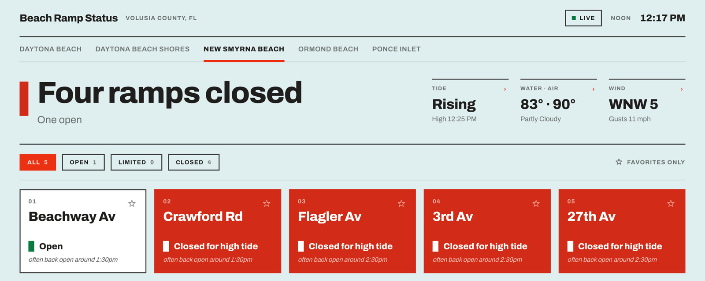
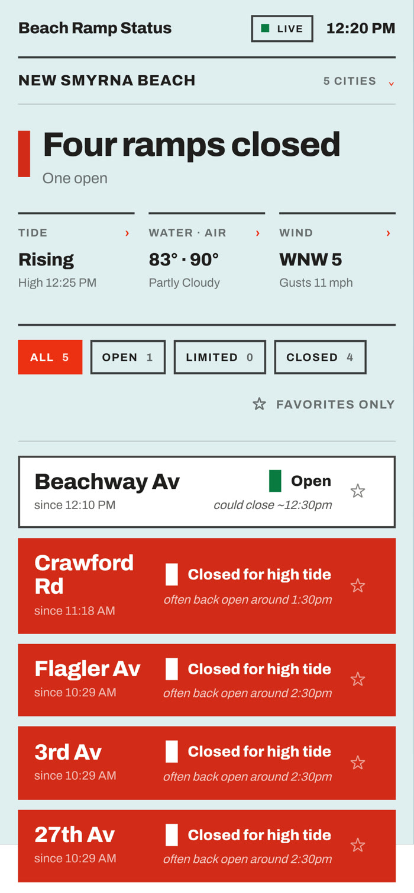
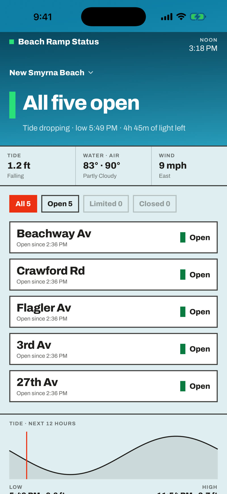
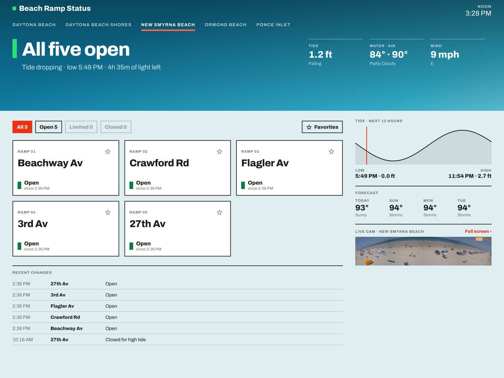
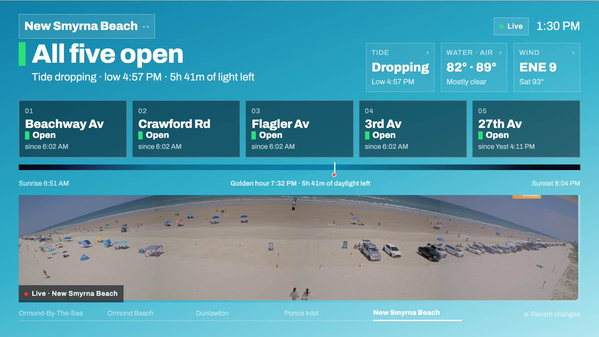

Can I get on the beach right now? That's the question this project answers — on the web, on iPhone and iPad, and on the living-room TV. Built in New Smyrna Beach by a county resident, running live today, free, with no ads and no accounts. This page is the tour.
Open beach.donwb.com on any phone or desktop — nothing to install — and the answer is the biggest thing on the screen. Ramp-by-ramp status comes straight from the county's own data, refreshed every minute, with tide, water temperature, wind, and the NWS forecast alongside.

The live site during a real high-tide event — August 16, 2026, 12:17 PM.
Every card carries a hint about what's next: "often back open around 1:30pm" on a closed ramp, "could close ~12:30pm" on an open one. Those lines come from a model that learns each ramp's actual closure behavior from two seasons of logged history joined to NOAA tide data — retrained nightly.
The wording is deliberately honest: "often," "could," "around." It never promises a minute-precise time, because the beach doesn't work that way. What it does is save a family the drive to a ramp that won't reopen for two hours.

Purpose-built SwiftUI apps, not wrapped web pages: a sun-following board that shifts with the actual sky over Volusia, ramp detail screens, live cams, and home-screen and Lock Screen widgets so the answer is visible before the phone is even unlocked.


The Apple TV app puts the county's live beach cams next to ramp status, tide, and daylight — a glanceable picture of the entire coast from Ormond-by-the-Sea to New Smyrna. It's built for the living room, and it would be just as at home on a lobby or visitor-center screen.

The website and apps are yours to point residents at — link them, embed them, or let's talk about making them official. They complement the county's Volusia Beaches app by covering platforms it doesn't reach: Apple TV, iPad, and widgets. No cost, no catch; I built this because I live here and wanted it to exist.